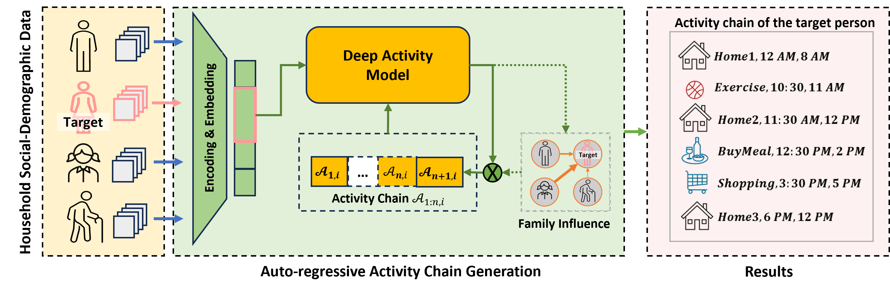

Intelligent vehicles and smart mobility systems are at the forefront of transportation evolution, yet effective management of these new mobility technologies and services are non-trivial. This perspective proposes an Intelligent Mobility System Digital Twin (MSDT) framework as a solution. Our framework uniquely maps human beings and vehicles to AI agents and the mobility systems to AI networks, creating realistic digital simulacra of the physical mobility system. By integrating AI agents and networks, this framework offers unprecedented capabilities in prediction and automated simulation of the entire mobility systems, thereby improving planning, operations, and decision-making in smart cities.
Deep Activity Model: A Generative Approach for Human Mobility Pattern Synthesis
Semantic Trajectory Data Mining with LLM-Informed POI Classification